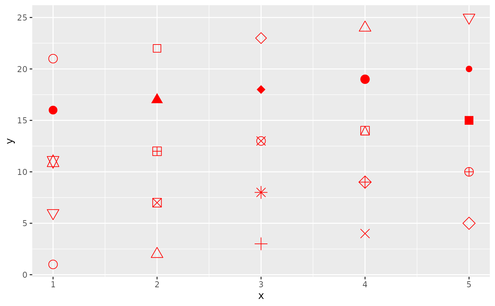
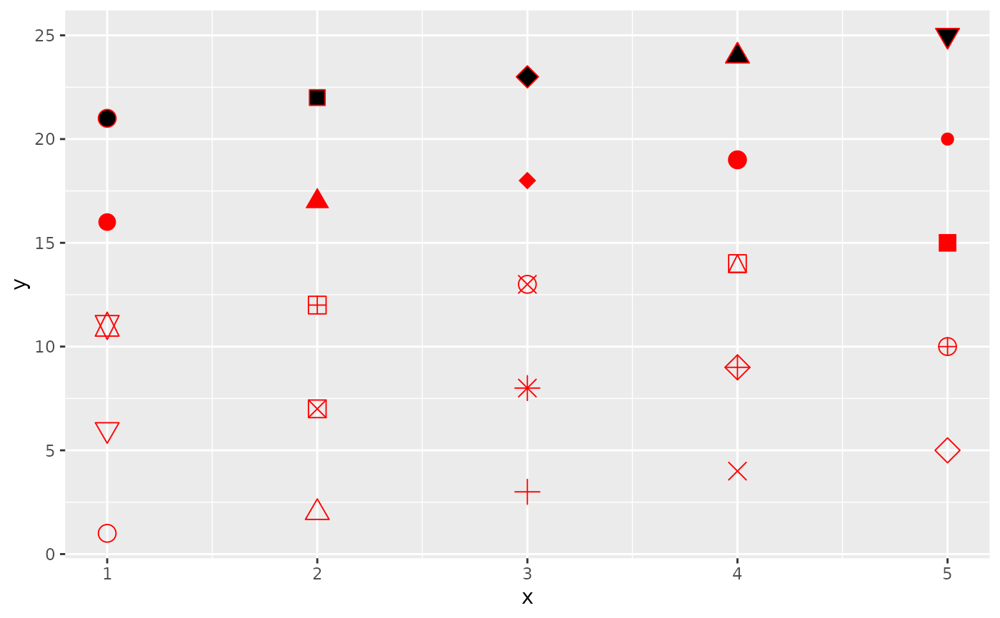
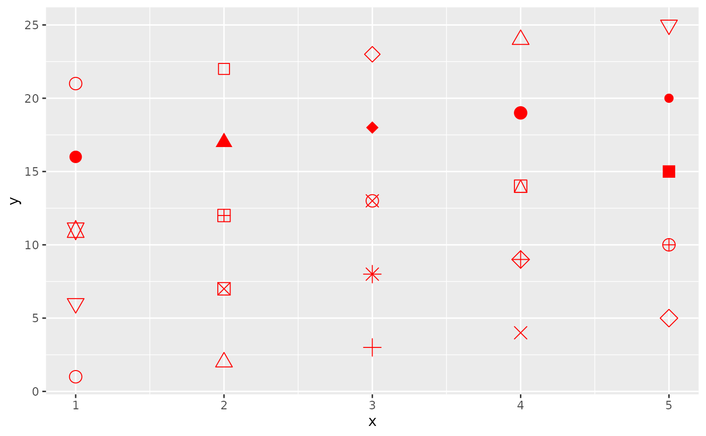
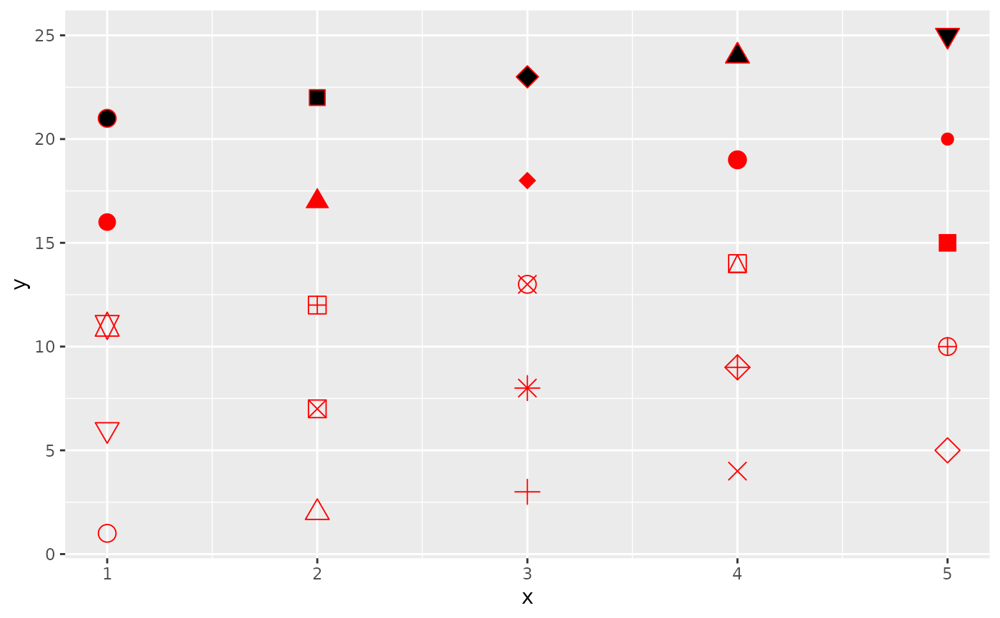

Differentiation related aesthetics: linetype, size, shape
Source:R/aes-linetype-size-shape.R
aes_linetype_size_shape.RdThe linetype, linewidth, size, and shape aesthetics modify the
appearance of lines and/or points. They also apply to the outlines of
polygons (linetype and linewidth) or to text (size).
Linetype
The linetype aesthetic can be specified with either an integer (0-6), a
name (0 = blank, 1 = solid, 2 = dashed, 3 = dotted, 4 = dotdash, 5 = longdash,
6 = twodash), a mapping to a discrete variable, or a string of an even number
(up to eight) of hexadecimal digits which give the lengths in consecutive
positions in the string. See examples for a hex string demonstration.
Linewidth and stroke
The linewidth aesthetic sets the widths of lines, and can be specified
with a numeric value (for historical reasons, these units are about 0.75
millimetres). Alternatively, they can also be set via mapping to a continuous
variable. The stroke aesthetic serves the same role for points, but is
distinct for discriminating points from lines in geoms such as
geom_pointrange().
Size
The size aesthetic control the size of points and text, and can be
specified with a numerical value (in millimetres) or via a mapping to a
continuous variable.
Shape
The shape aesthetic controls the symbols of points, and can be specified
with an integer (between 0 and 25), a single character (which uses that
character as the plotting symbol), a . to draw the smallest rectangle that
is visible (i.e., about one pixel), an NA to draw nothing, or a mapping to
a discrete variable. Symbols and filled shapes are described in the examples
below.
See also
geom_line()andgeom_point()for geoms commonly used with these aesthetics.aes_group_order()for usinglinetype,size, orshapefor grouping.Scales that can be used to modify these aesthetics:
scale_linetype(),scale_linewidth(),scale_size(), andscale_shape().Run
vignette("ggplot2-specs")to see an overview of other aesthetics that can be modified.
Other aesthetics documentation:
aes(),
aes_colour_fill_alpha,
aes_group_order,
aes_position
Examples
df <- data.frame(x = 1:10 , y = 1:10)
p <- ggplot(df, aes(x, y))
p + geom_line(linetype = 2)
 p + geom_line(linetype = "dotdash")
p + geom_line(linetype = "dotdash")
 # An example with hex strings; the string "33" specifies three units on followed
# by three off and "3313" specifies three units on followed by three off followed
# by one on and finally three off.
p + geom_line(linetype = "3313")
# An example with hex strings; the string "33" specifies three units on followed
# by three off and "3313" specifies three units on followed by three off followed
# by one on and finally three off.
p + geom_line(linetype = "3313")
 # Mapping line type from a grouping variable
ggplot(economics_long, aes(date, value01)) +
geom_line(aes(linetype = variable))
# Mapping line type from a grouping variable
ggplot(economics_long, aes(date, value01)) +
geom_line(aes(linetype = variable))
 # Linewidth examples
ggplot(economics, aes(date, unemploy)) +
geom_line(linewidth = 2, lineend = "round")
# Linewidth examples
ggplot(economics, aes(date, unemploy)) +
geom_line(linewidth = 2, lineend = "round")
 ggplot(economics, aes(date, unemploy)) +
geom_line(aes(linewidth = uempmed), lineend = "round")
ggplot(economics, aes(date, unemploy)) +
geom_line(aes(linewidth = uempmed), lineend = "round")
 # Size examples
p <- ggplot(mtcars, aes(wt, mpg))
p + geom_point(size = 4)
# Size examples
p <- ggplot(mtcars, aes(wt, mpg))
p + geom_point(size = 4)
 p + geom_point(aes(size = qsec))
p + geom_point(aes(size = qsec))
 p + geom_point(size = 2.5) +
geom_hline(yintercept = 25, size = 3.5)
p + geom_point(size = 2.5) +
geom_hline(yintercept = 25, size = 3.5)
 # Shape examples
p + geom_point()
# Shape examples
p + geom_point()
 p + geom_point(shape = 5)
p + geom_point(shape = 5)
 p + geom_point(shape = "k", size = 3)
p + geom_point(shape = "k", size = 3)
 p + geom_point(shape = ".")
p + geom_point(shape = ".")
 p + geom_point(shape = NA)
#> Warning: Removed 32 rows containing missing values or values outside the scale
#> range (`geom_point()`).
p + geom_point(shape = NA)
#> Warning: Removed 32 rows containing missing values or values outside the scale
#> range (`geom_point()`).
 p + geom_point(aes(shape = factor(cyl)))
p + geom_point(aes(shape = factor(cyl)))
 # A look at all 25 symbols
df2 <- data.frame(x = 1:5 , y = 1:25, z = 1:25)
p <- ggplot(df2, aes(x, y))
p + geom_point(aes(shape = z), size = 4) +
scale_shape_identity()
# A look at all 25 symbols
df2 <- data.frame(x = 1:5 , y = 1:25, z = 1:25)
p <- ggplot(df2, aes(x, y))
p + geom_point(aes(shape = z), size = 4) +
scale_shape_identity()
 # While all symbols have a foreground colour, symbols 19-25 also take a
# background colour (fill)
p + geom_point(aes(shape = z), size = 4, colour = "Red") +
scale_shape_identity()

p + geom_point(aes(shape = z), size = 4, colour = "Red", fill = "Black") +
scale_shape_identity()

# While all symbols have a foreground colour, symbols 19-25 also take a
# background colour (fill)
p + geom_point(aes(shape = z), size = 4, colour = "Red") +
scale_shape_identity()

p + geom_point(aes(shape = z), size = 4, colour = "Red", fill = "Black") +
scale_shape_identity()
